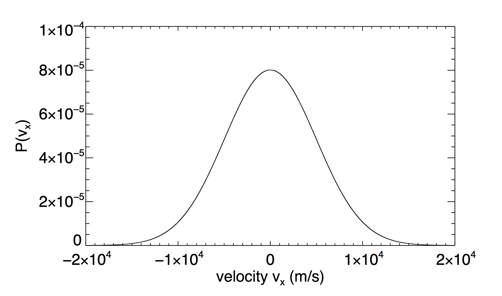

Forrige side🙂 🙁Middel og standardavvikFORUM
Hvis du er usikker på hvordan du løser oppgaven, så kan du få noen hint i denne videoen.
La oss se på en utfordring til: 
I figuren ser du Maxwell-Boltzmannfordelingen for vx. Fra figuren, anslå hva den midlere x-komponenten av hastigheten er i denne gassen? (altså gjennomsnittsvedien av x-komponenten av hastigheten) 0.5 × 104m/s 1 × 104m/s 0m/s